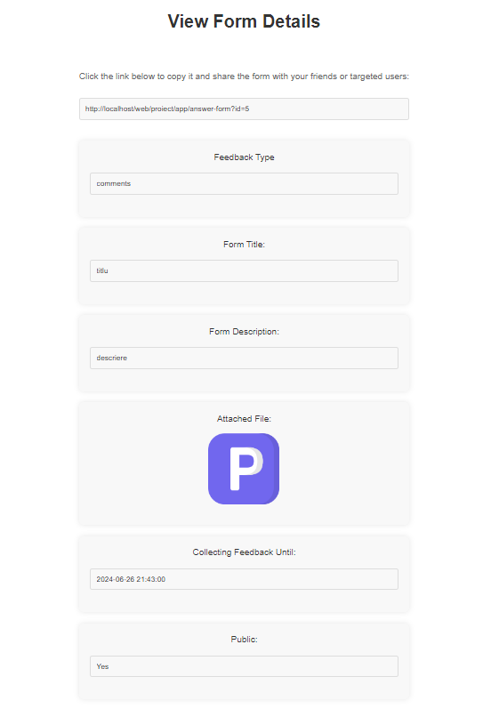
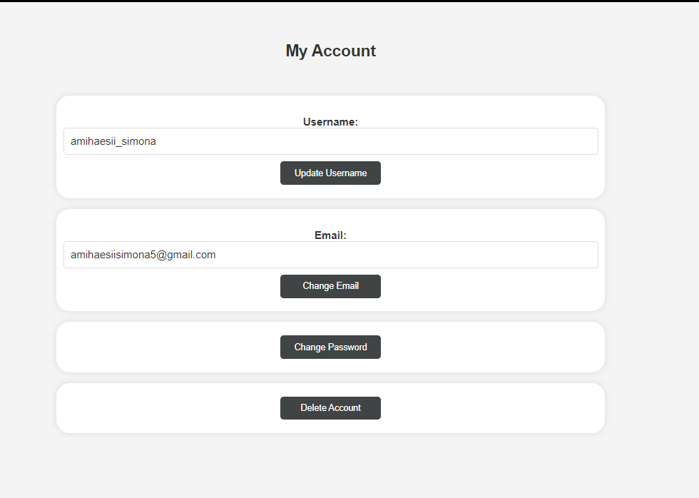

1. Introduction
Product Scope
The project aims to develop a web application that allows users to create custom forms for statistics and analysis. These forms can be tailored to specific entities or categories, enabling users to gather feedback and generate insights for their own purposes. The forms will capture feedback responses using the Plutchik emotion model.
In addition to creating forms, the web application will provide users with the ability to provide anonymous feedback for different entities (events, people, locations, products, services, etc.) using the Plutchik emotion model. Users will utilize intuitive forms to submit their emotional responses, which will be recorded and stored using a REST/GraphQL API.
References
2. Overall Description
Product Functions
- Allow users to create custom forms for collecting feedback based on the Plutchik emotion model.
- Enable users to submit anonymous feedback for various entities.
- Provide statistical analysis and visualization of collected feedback.
- Support user registration and authentication for managing forms and viewing historical data.
- Administrate user roles and manage reported forms for ensuring platform integrity.
User Classes and Characteristics
- General users: Can provide anonymous feedback using created forms.
- Logged-in users: Can create, manage, and view statistics of their own forms.
- Administrators: Have full control over user management, form moderation, and platform settings.
Operating Environment
- Compatible with modern web browsers (Chrome, Firefox, Safari, Edge).
- Supports multiple operating systems (Windows, macOS, Linux).
Design and Implementation Constraints
- Utilizes REST/GraphQL API architecture for backend operations.
- Requires UTF-8 encoding for consistent data handling across platforms.
Assumptions and Dependencies
- Users have access to a stable internet connection for form creation and feedback submission.
- Users are familiar with the Plutchik emotion model for providing feedback.
3. External Interface Requirements
User Interfaces
1. Header: Different headers for logged-in, non-logged-in users and admin interface.
2. HomePage: Displays website functionality and latest published forms.
3. Create Form page: Allows logged-in users to create custom feedback forms.
4. Answer Form page: Allows users to provide feedback anonymously.
5. View Form page: Allows users to view the details of the form and the answers, if it's accesed by the creator of the form or by admin.

6. My Account page: Displays user profile and account management options.

7. Forms History page: Shows user's form history with options to view statistics, view form and delete form.
8. View Statistics page: Displays visual representation of feedback statistics with the possibility of downloading them in different formats, along with the individual answers.
Admin Interface
The administrator interface provides additional functionality for managing users and reported forms:
- View user's profile with the option to delete their accounts.
- View and manage reported forms, with options to delete or cancel reports.
- Access detailed statistics and analytics for all forms.
- Answer to the messages the users have sent in the Contact Form Page.
9. Administrators page: Allows the administrator to manage users, forms, reported forms and make import and exports for database backup.
10. Administrators page: Allows the administrator to respond to the users messages received from the contact form.
4. System Features
User Authentication and Authorization:
Implementing a secure login system that includes password encryption and session management. This could also include features like password recovery by email verification.
Data Export
Users can export the data from their feedback forms in various formats (CSV, JSON, HTML) for further analysis.
Anonymous Feedback Submission
Users can provide feedback anonymously without requiring them to create an account or provide personal information. This can encourage more honest and unbiased feedback.
Emotion Selection
User-friendly interface for selecting emotions based on the Plutchik model.
Data Visualization
Implementing visually appealing data visualizations to represent feedback data, such as charts, using Chart.js. This can help users understand the data more intuitively and identify patterns or trends.
Social Sharing
Implementing social media sharing functionality to allow users to share feedback forms or specific responses on platforms like Facebook, Instagram, LinkedIn.
Email Messaging (SMTP with Gmail)
Integration with Gmail SMTP for email notifications and communication:
- Send confirmation emails after registration..
- Send password reset, email change, delete account confirmations emails.
- Send notifications to users when a form is successfully created.
- Send messages to the admin using the form from the Contact Page.
Databases
The database will contain tables for forms, responses, and users. Each table will have a unique randomly generated ID for each record.
- Forms Table: Stores form metadata and structure.
- Responses Table: Stores feedback responses and associated metadata.
- Users Table: Stores user information and authentication credentials.

5. Other Nonfunctional Requirements
Safety Requirements
- User anonymity must be maintained.
- Data encryption for user privacy.
Security Requirements
- Secure user authentication and authorization.
6. Architecture
6.1 MVC (Model-View-Controller) Architecture
The project follows the MVC architectural pattern to ensure separation of concerns and maintainability of the codebase. MVC divides an application into three interconnected components:
-
Model:
- Represents the application's data and business logic.
- Interacts with the database, sends requests to the services and encapsulates data manipulation and validation.
- Example: The
User, Form, and Answer models manage respective entities and their relationships.
-
View:
- Presents the user interface and renders data from the model into a suitable format.
- Receives user input and sends it to the controller for processing.
- Example: HTML templates render forms, feedback responses, and statistical data.
-
Controller:
- Acts as an intermediary between the model and view.
- Processes user requests, retrieves data from the model, and selects views to display the response.
- Example: PHP controllers handle HTTP requests, invoke appropriate models for data operations, and manage user authentication.
6.2 Services
Services in the project encapsulate reusable business logic and external integrations, promoting code reusability and separation of concerns.
-
User Service:
- Manages user-related operations such as authentication, registration, and profile management.
-
Form Service:
- Handles operations related to form creation, publication, and feedback collection.
-
Answer Service:
- Handles operations related to answers, such as creation, retrieving and generating statistics..